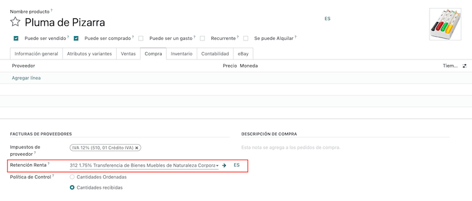
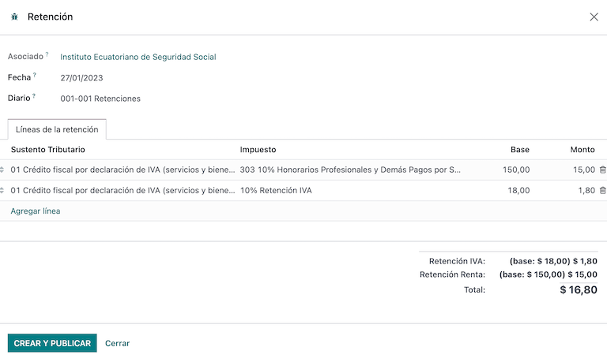
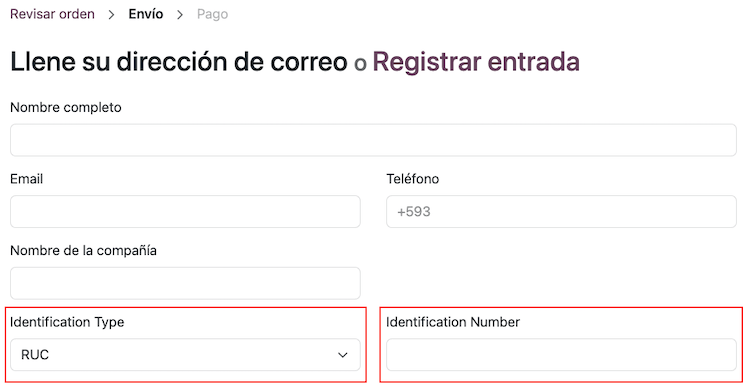

厄瓜多尔¶
介绍¶
通过厄瓜多尔本地化，您可以使用 XML、财政对开页、电子签名生成电子文档，并直接与 SRI 税务机关连接。
支持的文件包括发票、贷记单、借记单、采购清算和预扣款。
本地化还包括自动化功能，可轻松预测适用于每张采购发票的预扣税款。
词汇表¶
以下是一些在厄瓜多尔本地化中必不可少的术语：
SRI：意为*Servicio de Rentas Internas*，厄瓜多尔负责强制纳税的政府机构。
EDI：是*电子数据交换*的缩写，指电子文档的发送。
RIMPE：代表*Regimen Simplificado para Emprendedores y Negocios*，即符合 SRI 条件的纳税人类型。
配置¶
模块安装¶
安装 下列模块，以获得厄瓜多尔本地化的所有功能：
名称 |
技术名称 |
描述 |
|---|---|---|
厄瓜多尔 - 会计 |
|
默认 财政本地化包，为厄瓜多尔本地化添加了会计功能，这些功能代表了公司在厄瓜多尔运营所需的最低配置，符合:abbr:`SRI（国内税务局）`规定的指南。模块安装会自动加载：会计科目表、税种、文件类型、税务支持类型。此外，还可自动生成 103 和 104 表格。 |
厄瓜多尔会计 EDI |
|
包括根据 SRI 发布的技术文档生成和验证 电子文档 的所有技术和功能要求。授权文件包括发票、贷记单、借记单、预扣款和采购清算。 |
厄瓜多尔会计报告 |
|
包括生成表格 103 和 104 的所有技术和功能要求。 |
厄瓜多尔 - ATS 报告 |
|
包括生成 ATS 报告 XML 文件的所有技术和功能要求，可随时上传到 DIMM Formularios。 |
厄瓜多尔网站 |
|
包括从网站销售生成自动电子发票的所有技术和功能要求。 |
厄瓜多尔销售点 |
|
包括从 POS 销售生成自动电子发票的所有技术和功能要求。 |
注解
当您从头开始安装数据库，选择`厄瓜多尔`作为国家时，Odoo 会自动安装基础模块 厄瓜多尔 - 会计。
Configure your company¶
要配置公司信息，请进入 联系人 应用程序并搜索公司名称，或激活 开发者模式 并进入 然后编辑联系人，配置以下信息：
选中顶部的 公司 选项
名称
地址
识别码
纳税人类型
电话
电子邮件
上传公司标识并保存

电子文档¶
要上传电子文档信息，请访问 并搜索 厄瓜多尔本地化。
配置下一个信息：
公司法定名称
使用正式运营服务器：如果公司要在正式运营环境中处理电子文档，请选中复选框。如果要在测试环境中使用电子文档，则不要选中复选框。
方案：选择公司是普通公司还是 RIMPE 公司。
强制保留会计帐簿：如果公司有这种情况，请选中复选框。
预扣预缴的默认税金
发出预扣税：如果您的公司要进行电子预扣税，请选中复选框。
预扣消费品：输入购买商品时的预扣代码。
预扣服务：输入购买服务时的预扣代码。
预扣信用卡：输入您使用信用卡购物时的预扣代码。
预扣代理编号：输入公司预扣代理决议编号（如适用）。
电子证书文件：上传电子证书和密码，然后保存。
特殊纳税人编号：如果公司符合特殊纳税人条件，请在此栏填写相应的纳税人编号。
注解
在配置菜单中配置预扣款时，这些建议预扣款仅适用于国内供应商，当其 纳税人类型 未设置预扣款时。此外，当使用信用卡或借记卡 SRI 支付方式时，将始终使用信用卡预扣设置。
增值税预扣税¶
此配置仅适用于您被 SRI 授予 预扣代理 资格的情况，否则跳过此步骤。要配置增值税预扣代缴，请访问 。
您必须配置适用于每类纳税人的预扣百分比，指定 货物增值税预扣 和 服务增值税预扣。

小技巧
如果 纳税人类型 是 RIMPE，也请配置 利润预扣 百分比。
打印机点¶
要配置打印机点，请转到 。
需要为每种类型的电子文档配置打印机点。例如：客户发票、贷记单和借记单
您需要为每个打印机点配置以下信息：
日记账名称：格式为`[Emission Entity]-[Emission Point] [Document Type]`，例如：
001-001 销售文件。类型：指日记账类型，选择
销售。使用文件?：该复选框已自动选中，请保持选中状态。
发出实体：配置发出实体编号。
发出点：配置打印机点。
发出地址：配置店铺地址。
默认收入账户：配置默认收入账户。
专用贷记单序列：如果要从该打印机点生成 贷记单据，则选中复选框 - 日记账。
简码：这是会计分录序列的唯一代码，请输入唯一的 5 位数代码，例如：
VT001。
客户发票、贷记单和借记单需要使用与 发出点 相同的日记账，并且每个日记账的 发出点 应该是唯一的。

注解
在 高级设置 选项卡中，选中 电子发票 复选框，为厄瓜多尔启用该功能。
预扣税¶
必须定义预扣日记账，进入 ，在此需要配置以下信息：
日记账名称：格式为
[Emission Entity]-[Emission Point] [Document Type]，例如：001-001 扣款。类型：指日记账类型，选择`杂项`。
预扣类型：配置采购预扣。
使用文件?：该复选框已自动选中，请保持选中状态。
发出实体：配置发出实体编号。
发出点：配置打印机点。
发出地址：配置店铺地址。
默认账户：配置默认收入账户。
短代码：这是会计分录序列的唯一代码，请输入唯一的 5 位数代码，例如：
RT001。

注解
在 高级设置 选项卡中，选中 电子发票 复选框，启用发送预扣款电子发票。
采购清算¶
使用采购清算时，必须创建特定的日记账，请转至 并配置以下信息：
日记账名称：格式为
[Emission Entity]-[Emission Point] [Document Type]，例如：001-001 扣款。类型：指日记账类型，选择`杂项`。
采购清算：选中复选框以启用采购清算。
使用文件?：该复选框已自动选中，请保持选中状态。
发出实体：配置发出实体编号。
发出点：配置打印机点。
发出地址：配置店铺地址。
短代码：这是会计分录序列的唯一代码，请输入唯一的 5 位数代码，例如：
RT001。

注解
在 高级设置 选项卡中，选中 电子发票 复选框，启用发送预扣款电子发票。
配置主数据¶
科目表¶
默认安装 会计科目表 作为本地化模块中数据集的一部分，这些账户自动映射到税务、默认应付账款、默认应收账款中。
厄瓜多尔的会计科目表以公司监管局的最新版本为基础，分为几个类别，并与 NIIF 会计核算兼容。
您可以根据公司需要添加或删除账户。
产品¶
除了产品中的基本信息外，您还必须添加适用的预扣代缴代码（税）配置。
进入 ，点击“采购”选项卡。
联系人¶
创建联系人时配置下一条信息：
如果是与 RUC 联系，请选中顶部的 公司 选项；如果是与 cedula 或护照联系，请选中 个人 选项。
名称
地址：街道 是确认电子发票的必填字段。
身份证号码：选择身份证类型`RUC`、
Cedula`或`护照。纳税人类型：选择联系人的 SRI 纳税人类型。
电话
电子邮件

注解
:guilabel:`SRI 纳税人类型`在配置中包含了当您在供应商账单上使用此联系人，并从中创建代扣时适用的增值税和利润代扣。
审查您的税款¶
作为本地化模块的一部分，税款会根据其配置和相关财务账户自动创建。

以下选项已自动配置：
税务支持：仅在 IVA 税务中配置，此选项在登记采购预扣时非常有用。
代码 ATS：仅为所得税预扣代缴代码进行配置，在注册预扣代缴时非常重要。
税务网格：如果是 IVA 税，则配置 104 表格的代码，如果是所得税预扣代码，则配置 103 表格的代码。
税务名称：
对于 IVA 税，将名称格式化为`IVA [percent] (104, [form code] [tax support code] [tax support short name])`
对于所得税预扣代码，将名称格式化为：
代码 ATS [Percent of withhold] [withhold name]
安装厄瓜多尔模块后，将自动配置最常见的税收。如果需要创建额外的税项，您可以根据现有税项的配置进行创建。

查看您的文件类型¶
有些会计交易，如*客户发票*和*供应商账单*，按文件类型分类。这些都由政府财政部门定义，本例中由 SRI 定义。
每种文档类型都可以为其所在的每种日记账设定一个唯一序列。作为本地化的一部分，文件类型包括文件适用的国家/地区；安装本地化模块时，数据也会自动创建。
文件类型所需的信息默认已包含在内，因此用户无需填写任何内容。

工作流¶
配置数据库后，您可以注册文档了。
销售文档¶
客户开票¶
:guilabel:`客户发票`是电子文档，一经验证即发送至 SRI。这些文件可以根据销售订单创建，也可以手动创建。它们必须包含以下数据：
客户：输入客户信息。
日记账：选择与客户发票打印点相匹配的选项。
文件类型：按此格式键入文件类型
（01）发票。付款方式（SRI）：选择发票的付款方式。
产品：指定具有正确税费的产品。

客户贷记单/退款单¶
客户贷记单 是一份电子文件，一经验证，即发送至 SRI。要登记贷记单，必须有一张已验证（已过账）的发票。发票上有一个名为 贷记单 的按钮，点击该按钮可进入 创建贷记单 表格，然后填写以下信息：
贷记方式：选择贷记方式类型。
部分退款：如果需要键入第一批单据，并且是部分贷记单时，请使用此选项。
全额退款：如果贷记单适用于总发票，并且需要自动验证贷记单并与发票核对，则使用此选项。
全额退款和新发票草稿：如果贷记单据适用于发票总额，并且需要自动验证贷记单据并与发票核对，以及自动创建新发票草稿，则使用此选项。
原因：输入贷项通知单的原因。
回滚日期：选择 特定 选项。
撤销日期：输入该日期。
使用特定日记账：选择贷方票据的打印点，如果想使用与原始发票相同的日记账，则将其留空。
审核完成后，您可以点击 撤销 按钮。

使用 部分退款 选项时，您可以更改贷记单的金额，然后进行验证。验证贷方票据之前，请查看以下信息：
客户：输入客户信息。
日记账：选择客户贷项通知单的打印点。
文件类型：这是单据类型
(04) 贷记单。产品：它必须指定具有正确税费的产品。

客户借记单/缴款通知¶
客户借记单 是一份电子文件，一经验证，即发送至 SRI。要注册借记单，必须有一张已验证（已入账）的发票。发票上有一个名为 借记单 的按钮，点击该按钮可进入 创建借记单 表单，然后填写以下信息：
原因：键入借记单的原因。
借记单日期：选择 特定 选项。
复制行：如果需要使用发票的相同资料行注册借记通知单，请选择此选项。
使用特定日记账：选择贷方票据的打印点，如果想使用与原始发票相同的日记账，则将其留空。
审核完毕后，您可以点击 创建借记单 按钮。

您可以更改借项单金额，然后进行验证。在验证之前，请查看以下信息：
客户：输入客户信息。
日记账：选择客户贷项通知单的打印点。
文件类型：这是单据类型
(05) 借记单。产品：它必须指定具有正确税费的产品。

客户预扣¶
客户预扣 是公司的非电子文件，该文件由客户签发，以便对销售进行预扣。
要登记客户预扣款，必须要有已验证（已入账）的发票。发票上有一个名为 添加预扣 的按钮，点击该按钮可进入 客户预扣 表格，然后填写以下信息：
文件编号：键入预扣编号。
预扣行：选择客户预扣的税款。
在验证预扣税款之前，请检查每种税款的金额是否与原始文件相同。

采购文件¶
供应商发票¶
:guilabel:`供应商账单`是公司的非电子文件，该文件由供应商在公司采购时签发。
账单可以根据采购订单创建，也可以手动创建，但必须包含以下信息：
供应商：输入供应商信息。
账单日期：选择开票日期。
日记账：这是供应商账单的日记账。
文件类型：这是文件类型`（01）发票`。
文件编号：键入文件编号。
付款方式（SRI）：选择发票的付款方式。
产品：指定具有正确税费的产品。

重要
创建采购预扣时，请确认基数（基本金额）是否正确。如果需要编辑 供应商账单 中的税额，请点击:guilabel:编辑 按钮。否则，从 日记账项目 选项卡点击 编辑 按钮，设置调整到您想要的位置。
采购清算¶
:guilabel:`采购清算`是一份电子文件，一经验证，即发送至 SRI。
公司在采购时会出具这类电子文档，而供应商由于以下一种或多种情况而不出具发票：
服务由非厄瓜多尔居民提供。
在厄瓜多尔没有居留权或设立机构的外国公司提供的服务。
向未在 RUC 注册的自然人购买商品或服务，由于其文化水平或抵抗力而无法开立销售收据或客户发票。
向有依赖性关系的员工（全职员工）购买商品或服务的报销。
合议机构成员为行使其职能而提供的服务。
这些类型的电子文档可从 采购订单 或从 供应商账单 表单视图中手动创建。它必须包含以下数据：
供应商：输入供应商信息。
日记账：选择具有正确打印机点的 采购清算 日记账。
文件类型：这是文件类型`(03)采购清算`
文件编号：键入文件编号（序列），只需键入一次，接下来的文件将自动分配序列。
付款方式（SRI）：选择发票的付款方式。
产品：指定具有正确税费的产品。
查看信息后，您就可以验证 采购清算。

采购预扣¶
:guilabel:`采购预扣`是一份电子文件，经过验证后将发送至SRI。
为了注册 采购预扣，发票必须在经过验证的状态。发票上有一个名为 加入预扣 的按钮，点击此按钮将转到 预扣 表单，然后填写以下资讯：
文件编号：键入文件编号（序列），只需键入一次，接下来的文件将自动分配序列。
预扣数据行：硅谷配置根据产品和供应商的自动出现，您应该检查硅谷和硅谷支持是否正确，如果不正确，您可以编辑并选择正确的和硅谷支持。
核对信息后，您可以验证 预扣。
注解
您无法更改未包含在 供应商账单 所用税务配置中的税务支持。如要更改，请转到适用于 供应商账单 的税款，并更改其中的 税务支持。
预扣税可分为两行或多行，这取决于是否适用两个或多个预扣百分比。
Example
系统建议预扣 30% 的增值税，并提供税收支持 01，您可以在具有相同税收支持的新行中加入 70% 的增值税预扣，只要基数总和与来自 供应商账单 的总和相符，系统就会允许您操作。
电子商务¶
ATS 报告模块 可以实现以下功能：
Choose the SRI Payment Method in each payment method’s configuration.
Customers can manually input their identification type and identification number during the eCommerce checkout process.
Automatically generate a valid electronic invoice for Ecuador at the end of the checkout process.
配置¶
网站¶
To generate an invoice after the checkout process, navigate to and activate the Automatic Invoice option found under the Invoicing section.
小技巧
The invoice’s email template can be modified from the Invoice Email Template field under the Automatic Invoice option.
重要
用于开具发票的销售日记账在 日记账 菜单的优先顺序中排在第一位。
支付提供商¶
要启动用于获取电子商务付款的付款提供商，请导航至 部分，然后点击 查看其他提供商 标题下的 启动付款 按钮。在此，可以通过选择提供商记录来配置每个付款提供商。更多信息请参阅 付款提供商 文档。
支付方式¶
要启动付款提供商的一种或多种付款方法，请在每个提供商的 配置 分页中，点击 → 启用付款方法。
在配置付款方式时，必须 为每种付款方式设置 SRI 付款方式。该字段会在您首次创建并保存付款方式后出现。
注解
要正确生成电子商务销售的电子发票，必须添加 SRI 付款方式。选择**付款方式**，进入其配置菜单和字段。
参见
电子商务工作流程¶
标识类型和编号¶
在结账过程中，购买的客户可以选择标明其身份类型和编号。结账完成后，需要这些信息才能正确生成电子发票。
注解
验证的目的是确保 身份号码 字段填写完整且位数正确。对于 RUC 识别，需要 13 位数字。对于 Cédula，需要 9 位数字。
完成结账流程后，将生成确认发票，可手动或异步发送至 SRI。
销售点电子发票¶
确保 厄瓜多尔销售点模块 (l10n_ec_edi_pos) 已安装 以启用以下功能和配置：
在每种付款方式配置中选择 SRI 付款方式。
在 POS 上创建新联系人时，手动输入客户的识别类型和识别号码。
Automatically generate a valid electronic invoice for Ecuador at the end of the checkout process.
付款方式配置¶
要 为销售点 创建付款方法，请进入 。
开票流程¶
标识类型和编号¶
POS 收银员可以 为客户 创建新联系人，该客户在打开的 POS 会话中要求开具发票。
厄瓜多尔销售点模块 在联系人创建表单中增加了两个新字段：识别类型 和 :guilabel:` 税号`。
注解
由于识别码长度因识别类型而异，Odoo 会在保存联系表单时自动检查 税号 字段。要手动确保长度正确，请了解 RUC 和 公民身份 类型分别需要 13 位和 10 位数字。
电子发票：匿名终端客户¶
当客户不要求提供电子发票时，Odoo 会自动将客户设置为 最终消费者 并生成电子发票。
注解
If the client requests a credit note due to a return of this type of purchase, the credit note should be made using the client’s real contact information. Credit notes cannot be created to Consumidor Final and can be managed directly from the POS session.
Electronic invoice: specific customer¶
If a customer requests an invoice for their purchase, it is possible to select or create a contact with their fiscal information. This ensures the invoice is generated with accurate customer details.
注解
If the client requests a credit note due to a return of this type of purchase, the credit note and return process can be managed directly from the POS session.
财务报告¶
在厄瓜多尔，公司需要向 SRI 提交财务报告。Odoo 支持公司使用的两种主要财务报告： 103**和104。
要获取这些报告，请进入**会计**应用程序，选择:menuselection:报告 --> 报表报告 --> 税务报告，然后按 税务报告 103 或 税务报告 104 进行筛选。
报告 103¶
该报告包含特定时期的所得税预扣信息，可按月或半年报告一次。
您可以看到报告所需的信息，其中包括基数和税额，还包括括号内的税号，以便向 SRI 报告。

报告 104¶
该报告包含特定时期的增值税税款和增值税预扣税款信息，可以是每月一次，也可以是每半年一次。
您可以看到报告所需的信息，其中包括基数和税额，还包括括号内的税号，以便向 SRI 报告。

ATS 报告¶
Install the ATS Report (l10n_ec_reports_ats) module to enable
downloading the ATS report in XML format.
注解
厄瓜多尔 ATS 报告，模块取决于之前安装的 会计 应用程序和 厄瓜多尔 EDI 模块。
配置¶
要签发电子文档，请确保公司已按 :ref:`电子发票<l10n_ec/configure-your-company>`部分中的说明进行配置。
在:abbr:`ATS（Anexo Transaccional Simplificado）`中，Odoo 生成的每份文档（发票、供应商账单、销售和采购预扣、贷记单和借记单）都将包括在内。
供应商账单¶
生成供应商账单时，必须登记供应商为采购生成的发票上的授权号。要执行此操作，请进入 并选择账单。然后，在 授权编号 字段中输入供应商发票上的编号。
贷记和借记单¶
在手动或通过导入方式生成贷记单或借记单时，需要将单据与被修改的销售发票进行关联。
注解
在下载 ATS 文件之前，请记住在文件中添加所有必要信息。例如，必要时在文件上添加 授权编号 和 SRI 付款方式。
XML 生成¶
要生成 ATS（Anexo Transaccional Simplificado） 报告，请进入 并为所需的 ATS（Anexo Transaccional Simplificado） 报告选择一个时间段，然后点击 ATS。
下载的 XML 文件已准备好上传到 DIMM Formularios。

注解
在下载 ATS（Anexo Transaccional Simplificado） 报告时，Odoo 会弹出警告窗口，提醒用户文件中是否有缺失或不正确的数据。不过，用户仍可下载 XML 文件。